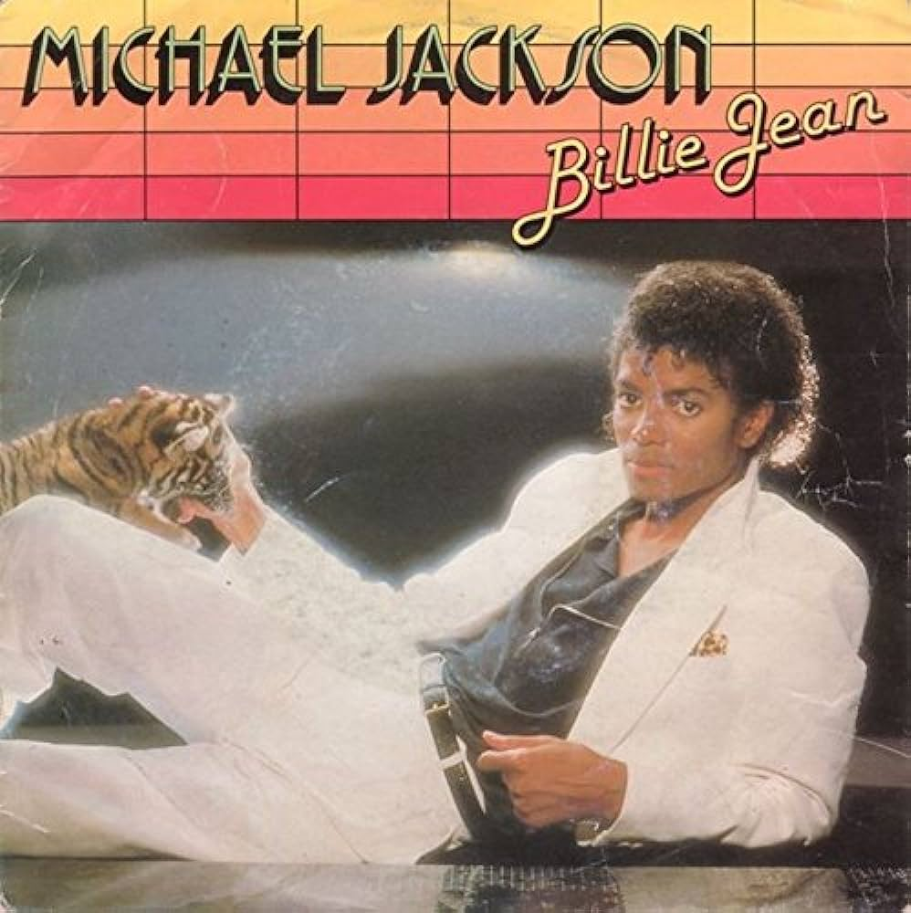

Cancionero | |
|
|
Billie Jean
She was more like a beauty queen from a movie scene Then every head turned with eyes that dreamed of being the one Who will dance on the floor in the round People always told me be careful of what you do And don't go around breaking young girls' hearts And mother always told me be careful of who you love And be careful of what you do 'cause the lie becomes the truth Billie Jean is not my lover She's just a girl who claims that I am the one But the kid is not my son She says I am the one, but the kid is not my son For forty days and forty nights The law was on her side But who can stand when she's in demand Her schemes and plans 'Cause we danced on the floor in the round So take my strong advice, just remember to always think twice (Do think twice, do think twice) She told my baby we'd danced 'til three, then she looked at me Then showed a photo my baby cried his eyes were like mine (oh, no) 'Cause we danced on the floor in the round, baby People always told me be careful of what you do And don't go around breaking young girls' hearts She came and stood right by me Just the smell of sweet perfume This happened much too soon She called me to her room Billie Jean is not my lover She's just a girl who claims that I am the one But the kid is not my son Billie Jean is not my lover She's just a girl who claims that I am the one But the kid is not my son She says I am the one, but the kid is not my son She says I am the one, but the kid is not my son Billie Jean is not my lover She's just a girl who claims that I am the one But the kid is not my son She says I am the one, but the kid is not my son She says I am the one You know what you did, (she says he is my son) breaking my heart babe She says I am the one Billie Jean is not my lover Billie Jean is not my lover Billie Jean is not my lover Billie Jean is not my lover (don't Billie Jean) Billie Jean is not my lover Billie Jean is not my lover
Michael Jackson
|